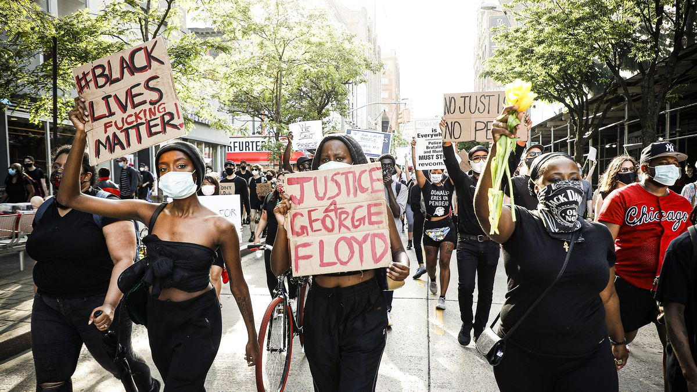

about this page!
this page is meant to push for a platform to showcase the many outlets that provides "facts and logic" on popular ideals within the nation.
fightin' for whats right :)
what should we fight for
- decreasing the wealth gap
- universal basic income for the poor
- equal opportunity for all
- holding those within power accountable for the abuse of power
- increasing funding for public education and opportunities for all students.
who should we stand up for?
our family, lour loved ones, and our future.
for more information: click on the recommended websites below :).
- info on universal basic income
- decreasing the wealth gap
- holding those within power accountable for the abuse of power